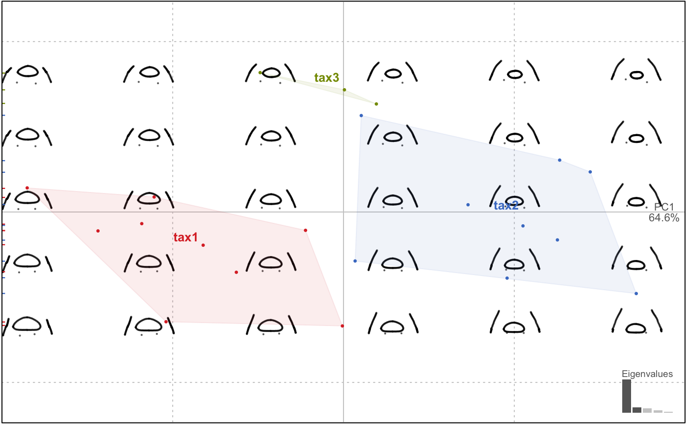

Directly wrapped around geomorph::gpagen.
fgsProcrustes(x)
| x | Ldk object with some |
|---|
See ?gpagen in geomorph package
Landmarks methods are the less tested in Momocs. Keep in mind that some features are still experimental and that your help is welcome.
Other procrustes functions: fProcrustes,
fgProcrustes, pProcrustes
chaffp <- fgsProcrustes(chaff)#> | | | 0% | |============== | 20% | |============================ | 40% | |========================================== | 60% | |======================================================== | 80% | |======================================================================| 100%chaffp#> An LdkCoe [full Generalized Procrustes] object with: #> -------------------- #> - $coo: 21 configuration of landmarks (172 +/- 0 coordinates) #> - $fac: 3 classifiers: #> 'id' (factor 21): 571, 572, 573, 581, 582, 583, 590, 592, 594, 602, 604 ... + 10 more. #> 'taxa' (factor 3): tax1, tax2, tax3. #> 'centsize' (numeric): mean: 1480, sd: 207.